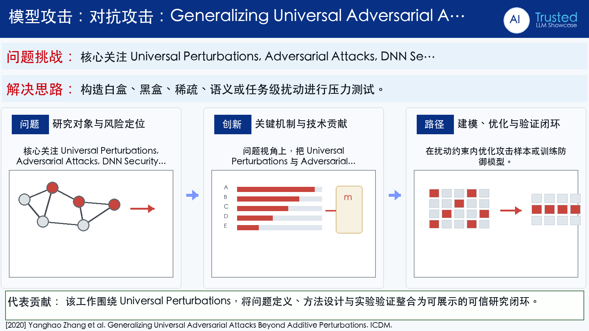

Problem
解决的问题
这篇论文属于“深度神经网络攻击”方向，核心关注 Universal Perturbations, Adversarial Attacks, DNN Security, Attack Evaluation。它要解决的不是单纯提升一个指标，而是在 ICDM 场景下，让模型、数据或感知系统面对真实扰动和任务约束时仍然可用、可评估、可解释。暴露模型在真实约束下的脆弱性。研究对抗扰动如何改变模型决策或系统行为。
Attacking on DNNs · 2020 · ICDM
Generalizing Universal Adversarial Attacks Beyond Additive Perturbations
Problem
这篇论文属于“深度神经网络攻击”方向，核心关注 Universal Perturbations, Adversarial Attacks, DNN Security, Attack Evaluation。它要解决的不是单纯提升一个指标，而是在 ICDM 场景下，让模型、数据或感知系统面对真实扰动和任务约束时仍然可用、可评估、可解释。暴露模型在真实约束下的脆弱性。研究对抗扰动如何改变模型决策或系统行为。
Value
用于展示时，这篇论文可以放在“问题定义 - 方法设计 - 证据评估”的链条中理解。它的价值在于把 Universal Perturbations 具体化为一个可实验验证的研究问题，并通过 IEEE International Conference on Data Mining (ICDM)（CCF B, CORE A*） 的发表形态呈现该方向的代表性进展。
ImageGen-style Representative Page
该代表页参考学术汇报信息图风格生成，用统一的深蓝标题栏、问题/思路提示带和三段式方法卡片，总结论文的主要研究问题、创新点与解决思路。
打开原文 PDF
Technical Route
Innovation